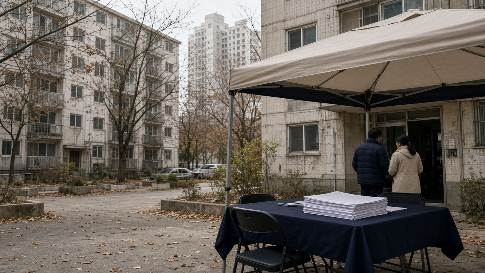
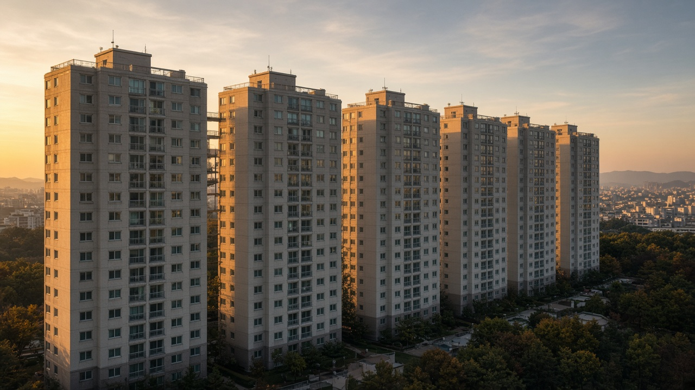
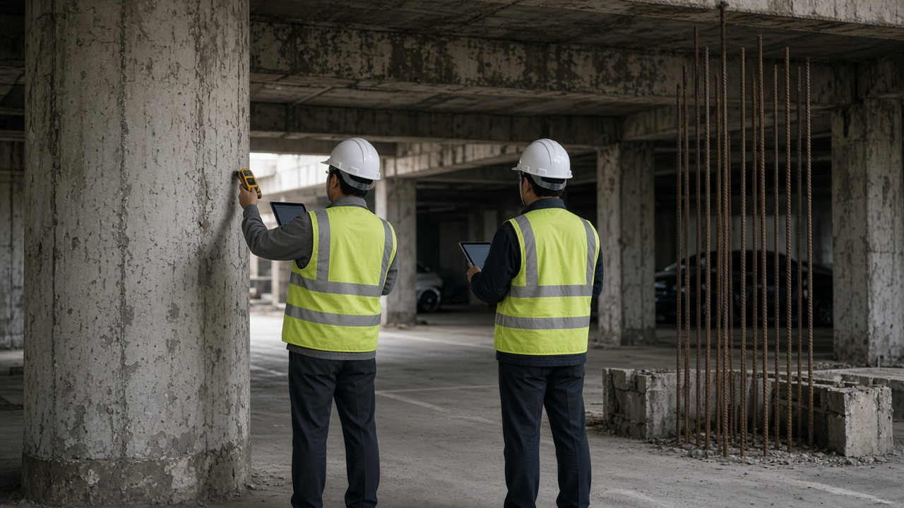

아파트 리모델링 주민 동의율 75퍼센트에서 70퍼센트로, 2027년 1월 1일 이후 허가 신청분부터 적용되는 이유

우리 아파트도 리모델링 이야기가 나오는데 동의서가 좀처럼 모이지 않는다는 이야기, 한 번쯤 들어 보셨을 거예요.
리모델링은 소유자 대부분이 찬성해야 허가를 받을 수 있어서 동의를 모으는 데만 몇 년씩 걸리는 단지도 많았어요.
국토교통부는 11월 17일 이 동의 요건을 75퍼센트에서 70퍼센트로 낮추는 주택법 시행령 개정안이 국무회의를 통과했다고 밝혔어요.
무엇이 바뀌는지, 언제부터 적용되는지, 우리 단지 입장에서 무엇을 확인해야 하는지 차례로 정리해 볼게요.
리모델링 허가 동의율이 75퍼센트에서 70퍼센트로 낮아져요
단지 전체를 리모델링할 때는 지금까지 전체 구분소유자와 의결권이 각각 75퍼센트 이상 동의해야 했어요.
개정안이 시행되면 이 기준이 각각 70퍼센트 이상으로 내려가요.
한 동만 따로 리모델링하는 경우에도 그 동의 구분소유자와 의결권 동의 기준이 각각 75퍼센트에서 70퍼센트로 똑같이 완화돼요.
구분소유자는 집을 소유한 사람 수, 의결권은 소유 지분에 따른 표라고 생각하면 이해하기 쉬워요.
두 가지 기준을 모두 넘어야 한다는 점은 그대로이니, 사람 수만 채웠다고 끝나는 게 아니라는 점은 기억해 두세요.

동별 50퍼센트 기준은 그대로 남아요
단지 전체 리모델링에서 각 동마다 50퍼센트 이상 동의를 받아야 하는 요건은 이번에 바뀌지 않았어요.
그래서 단지 전체로는 70퍼센트를 넘었더라도 반대가 많은 동이 하나라도 있으면 여전히 허가 요건을 채우지 못할 수 있어요.
동의율이 낮아졌다고 해서 소수 의견을 무시하고 사업을 밀어붙일 수 있게 된 것은 아니라는 뜻이에요.
리모델링을 추진하는 쪽이라면 전체 숫자뿐 아니라 동별 동의 현황을 따로 챙겨 보는 게 좋아요.
2027년 1월 1일 이후 허가를 신청하는 단지부터 적용돼요
이번 시행령 가운데 다른 내용은 공포한 날부터 바로 시행되지만, 리모델링 동의율 완화 규정은 2027년 1월 1일부터 시행돼요.
완화된 70퍼센트 기준은 2027년 1월 1일 이후 주택법 제66조 제1항에 따라 리모델링 허가를 신청하는 경우부터 적용돼요.
지금 동의서를 모으고 있는 단지라면 허가 신청 시점이 언제가 될지가 중요한 판단 지점이 되는 셈이에요.
연말 안에 신청하면 종전 75퍼센트 기준이 적용될 수 있으니, 정확한 적용 여부는 조합이나 관할 시군구에 직접 확인해 보세요.

수직증축 안전성 검토기관에 한국부동산원이 더해져요
층수를 위로 올리는 수직증축 리모델링은 구조 안전성 검토를 꼭 거쳐야 해요.
지금은 한국건설기술연구원과 국토안전관리원 두 곳만 이 검토를 맡고 있었는데, 앞으로는 한국부동산원이 추가돼 세 곳으로 늘어나요.
업계에서는 검토가 밀려 사업이 늦어진다는 이유로 전문기관을 더 지정해 달라는 요청을 꾸준히 해 왔다고 해요.
이 규정도 동의율 완화와 같이 2027년 1월 1일부터 시행돼요.
기관이 늘어난다고 검토 기준 자체가 느슨해지는 것은 아니니, 안전성 검토 결과에 따라 사업 계획이 바뀔 수 있다는 점은 그대로예요.
함께 바뀐 군인 실거주 예외와 지역주택조합 혼인 특례도 알아 두세요
같은 개정안에는 리모델링 말고도 생활에 닿는 내용이 두 가지 더 있어요.
10년 이상 복무한 장기복무 군인은 앞으로 특별공급이든 일반공급이든 분양받은 방법과 상관없이 인사 발령으로 이사할 때 지역 제한 없이 실거주 의무 예외를 인정받아요.
지금까지는 일반공급으로 분양받은 군인은 수도권 밖으로 옮길 때만 예외가 인정됐어요.
또 지역주택조합 조합원끼리 결혼하면 한 사람이 자격을 포기해야 했던 문제도 풀려서, 배우자의 조합주택 입주권은 주택 수에서 빼고 세대주 요건과 중복가입 금지 규정도 적용하지 않기로 했어요.
이 두 가지는 공포한 날부터 바로 시행되는 내용이라 해당되는 분이라면 조합이나 사업 주체에 먼저 문의해 보세요.
리모델링은 동의율 말고도 분담금, 공사 기간 동안의 이주, 안전성 검토 결과 같은 따져 볼 것이 많은 사업이에요.
이번 변화는 동의를 모으는 문턱을 조금 낮춘 것이니, 찬성이든 반대든 우리 단지의 사업 계획서와 분담금 추정치를 꼼꼼히 읽어 보고 결정하는 게 가장 중요해요.
참고 자료 국토교통부 11월 17일 보도자료 주택법 시행령 개정안 국무회의 의결, 대한민국 정책브리핑, 연합뉴스 11월 17일 기사
태그 아파트리모델링 리모델링동의율 주택법시행령 수직증축 안전성검토 한국부동산원 국토교통부 장기복무군인 지역주택조합 부동산정책